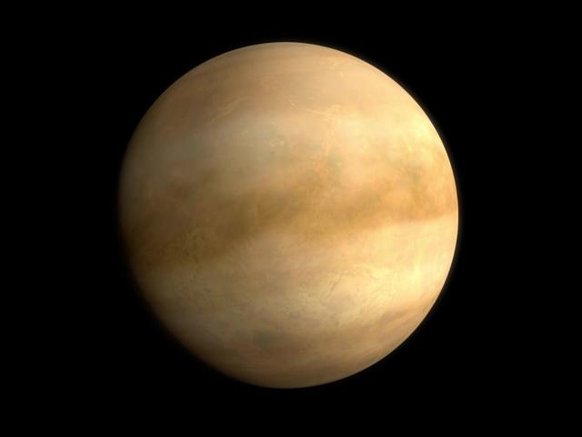
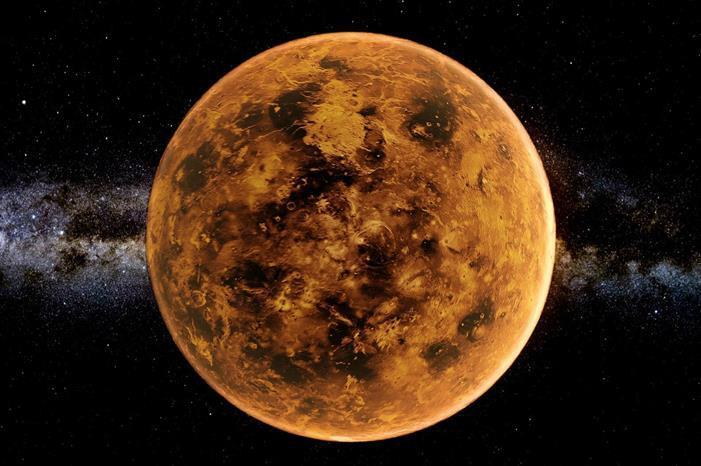
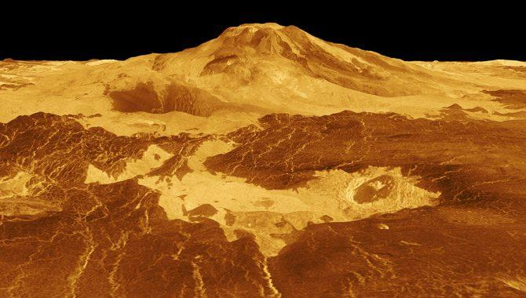
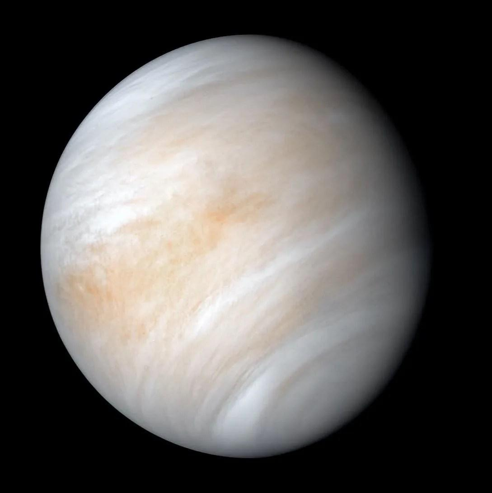
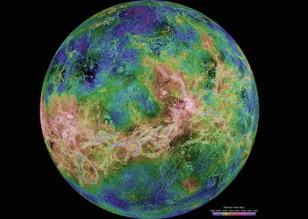
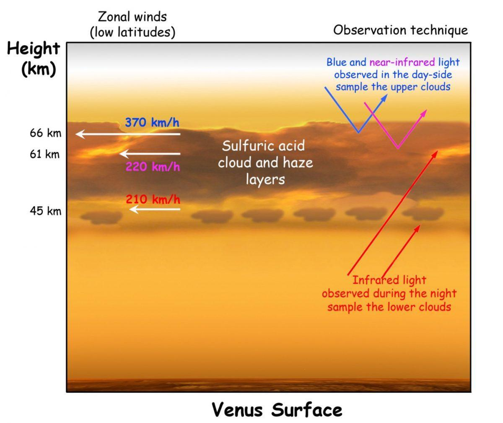
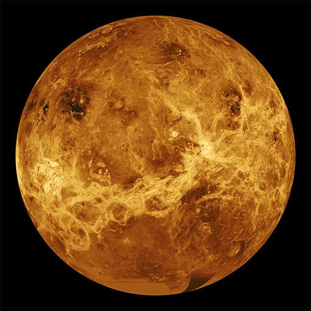

Year
225 Earth days to orbit the Sun
Venus is the second planet from the Sun and is often called Earth’s “twin” because of its similar size and structure.
However, despite these similarities, Venus is one of the most extreme and hostile planets in the solar system.
It is covered by a thick layer of clouds made of carbon dioxide and sulfuric acid, which trap heat and create a powerful greenhouse effect.
This makes Venus the hottest planet, even hotter than Mercury, despite being farther from the Sun.
Explore Full Story ›
Venus — the hottest planet in the solar system.
Venus has an incredibly dense atmosphere that traps heat efficiently.
Surface temperature is around 465°C, which is hot enough to melt lead.
The atmosphere is about 90 times thicker than Earth’s and is composed mainly of carbon dioxide.
This thick atmosphere creates a runaway greenhouse effect where heat cannot escape, causing the planet to remain extremely hot both day and night.

Venus is hotter than Mercury due to its thick atmosphere.

Venus is completely covered in thick clouds.
Venus is completely covered by clouds, meaning its surface cannot be seen from space using normal cameras.
These clouds reflect sunlight, making Venus the brightest planet in the sky.
They contain sulfuric acid, making them highly toxic, and they trap heat, maintaining extreme temperatures.
Because of this, Venus appears as a glowing yellow-white planet in the sky.
Beneath its thick clouds, Venus has a rocky surface filled with volcanoes, lava plains, mountains, and valleys.
Scientists believe Venus may still be geologically active, with volcanic eruptions possibly occurring even today.

Venus has thousands of volcanoes and lava plains.
Venus has one of the most unusual rotations in the solar system.
225 Earth days to orbit the Sun
243 Earth days to rotate once
A day on Venus is longer than its year
Venus rotates backwards (Sun rises in the west)

Venus has no moons or rings.
Like Mercury, Venus has no moons and no ring system.
Second planet from the Sun
Hottest planet in the solar system
Thick, toxic atmosphere
Covered in reflective clouds
Volcanic and rocky surface
Day longer than its year
Rotates backwards
Venus is a powerful example of how a planet similar to Earth can evolve in a completely different way.
Its runaway greenhouse effect has turned it into an extremely hot and uninhabitable world.
Studying Venus helps scientists understand climate change, atmospheric conditions, and how delicate the balance of a planet’s environment can be.
It shows what can happen when heat-trapping gases build up uncontrollably.
Venus compared with other planets in the solar system.

